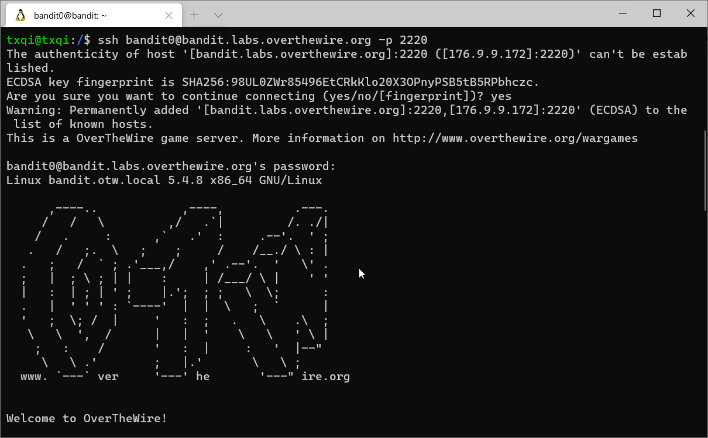
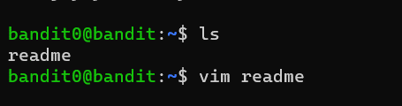
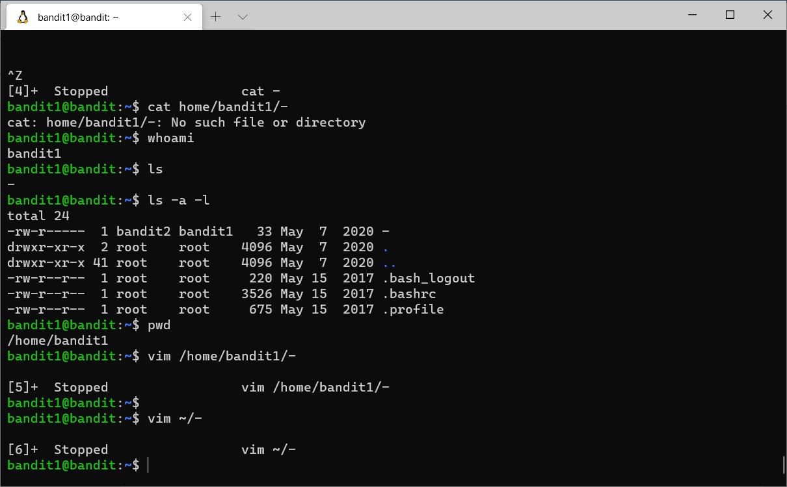
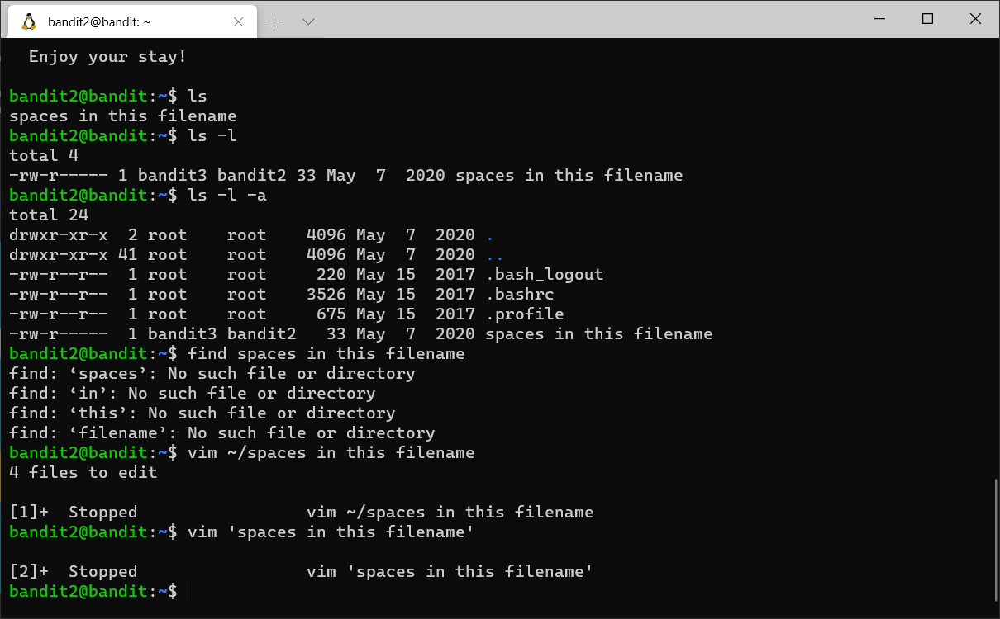
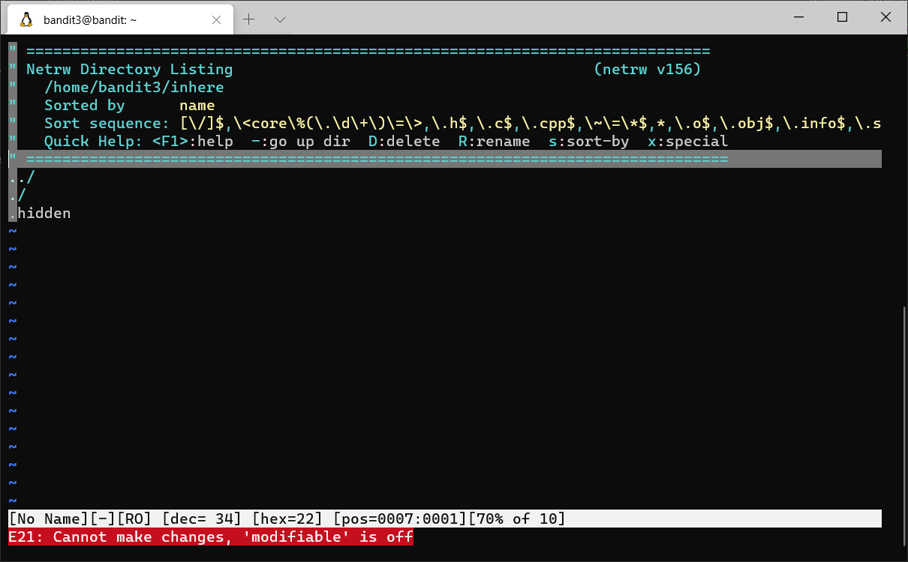
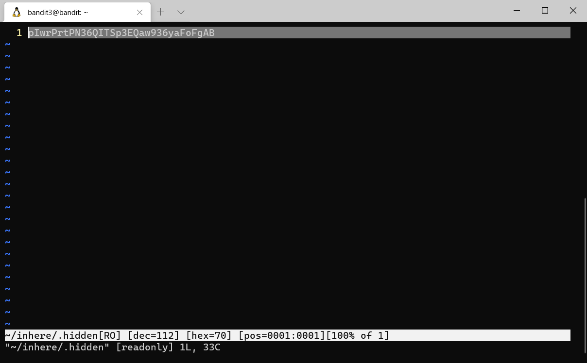

The command used is rather simple:
ssh bandit0@bandit.labs.overthewire.org -p 2220

Now we entered the machine, lets go level solve level 1.
The clue given is there is readme file. So we can see it by using ‘’ls’’ command and read the readme

Then we’ll get the password which is ‘’’ boJ9jbbUNNfktd78OOpsqOltutMc3MY1’’’
Now we continue to log on as bandit1 with given password using ssh
Here we will stumble a file with name of ‘’–‘’. The thing is we cannot directly read the file because if written is CLI, the dash usually holding up additional argument of the command. The only way is to write full path of the ‘’–‘’ file by writing the directory or just simply ‘’~/-‘’. The ‘’~’’ will determine the path of the -.

After getting the password, we can proceed to next level

Here we can see that there is file name ‘’’spaces in this filename’’’. Once more CLI don’t really recognize/differentiate either a space between two so we must specifiy that the spaces is name of file not adding other command in the line. We can solve this by putting ‘ before and after the name of file.

Here we are dealing with hidden files in a directory. However, we can use vim in navigate and access the hidden file.
